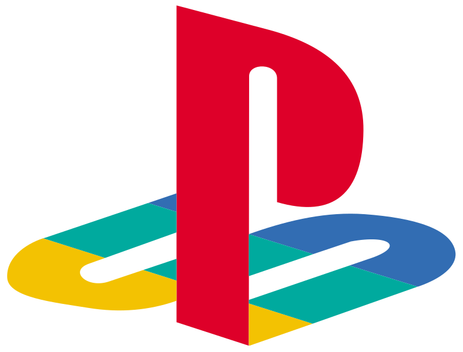

Infinity GamingInfinity Gaming
Infinity GamingInfinity Gaming


layStation was the brainchild of Ken Kutaragi, a Sony executive who managed one of the company's hardware engineering divisions and was later dubbed "The Father of the PlayStation".The console's origins date back to 1988 where it was originally a joint project between Nintendo and Sony to create a CD-ROM for the Super Famicom.[19] Although Nintendo denied the existence of the Sony deal as late as March 1991,Sony revealed a Super Famicom with a built-in CD-ROM drive, that incorporated Green Book technology or CD-i, called "Play Station" (also known as SNES-CD) at the Consumer Electronics Show in June 1991. However, a day after the announcement at CES. |
|
|---|---|
|  | The Xbox 360 is a home video game console developed by Microsoft. As the successor to the original Xbox, it is the second console in the Xbox series. It competed with Sony's PlayStation 3 and Nintendo's Wii as part of the seventh generation of video game consoles. It was officially unveiled on MTV on May 12, 2005, with detailed launch and game information announced later that month at the 2005 Electronic Entertainment Expo. |